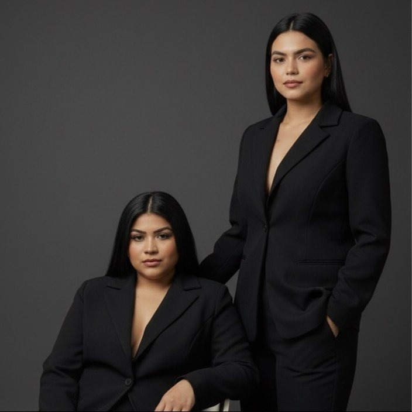
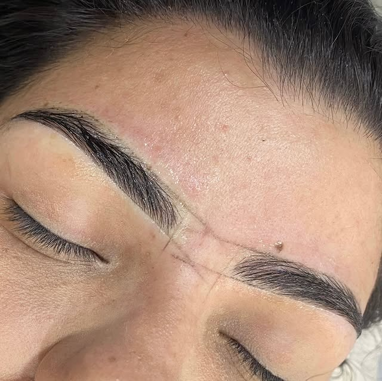
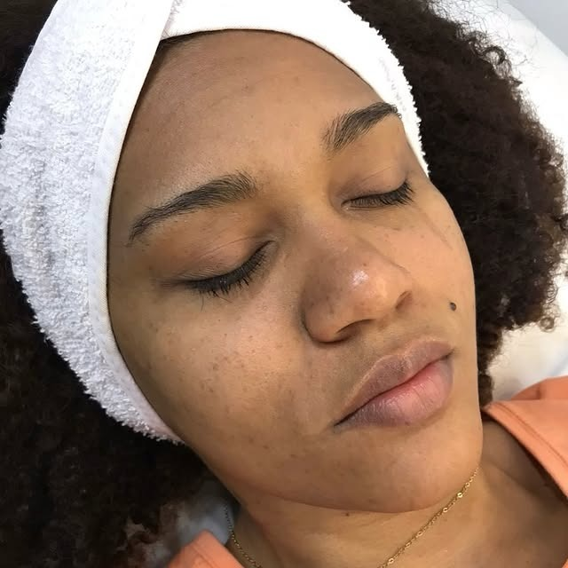
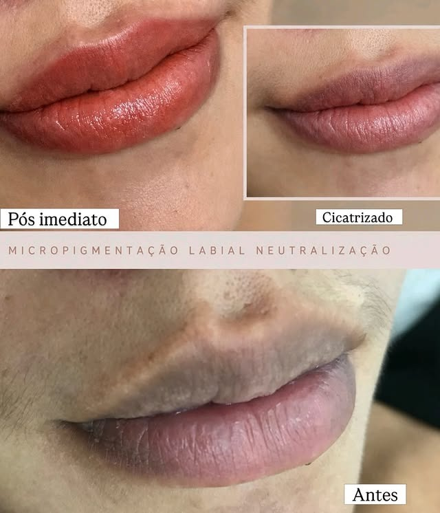

Estética facial & sobrancelhas em Manaus. Removemos o excesso para que a sua essência seja inesquecível.
No Studio Figueira, cada atendimento começa pela atenção às necessidades e características de cada cliente.
Em um espaço reservado no Centro de Manaus, oferecemos uma experiência próxima, cuidadosa e personalizada.
Cuidados faciais direcionados às necessidades e características de cada pele, com foco em bem-estar e atenção individual.
Procedimentos voltados à valorização do olhar e à harmonia dos traços naturais.
Realizado com horário agendado para oferecer mais organização, conforto e atenção exclusiva a você.
Edifício Rio Negro Center,
no Centro de Manaus.
Se você procura limpeza de pele, dermaplaning, design de sobrancelhas ou remoção de sinais, conheça nossos serviços.
Atendimento agendado · Centro de Manaus
Cuidado facial voltado à higienização e à manutenção da aparência saudável da pele. O atendimento deve considerar as características e necessidades individuais de cada cliente.
Procedimento de cuidado facial direcionado à renovação superficial e à melhora da aparência e da textura da pele.
Atendimento pensado para valorizar o olhar, respeitando o formato do rosto, os traços naturais e as preferências de cada cliente.
Atendimento com avaliação individual para verificar o procedimento indicado para cada caso, garantindo segurança e eficácia.
Nome responsável: [A CONFIRMAR]
Formação: [A CONFIRMAR]
Registro: [A CONFIRMAR]
Método: [A CONFIRMAR]
Indicações e contraindicações: [A CONFIRMAR]
* Para casos que precisam de avaliação dermatológica, sempre consulte um especialista prévio.
Profissional: [A CONFIRMAR]
Especializações: [A CONFIRMAR]
Atuação: [A CONFIRMAR]
Experiência Remoção: [A CONFIRMAR]




Agende seu atendimento e descubra os cuidados disponíveis para a sua pele.
Agendar pelo WhatsApp* Aceitamos Crediário Bemol e Avancard